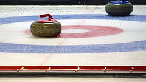

Na Letné vyrostl originální Olympijský park
Na pražské Letné vyrostl Olympijský park, který nabídne všem milovníkům zimních radovánek neobvyklé zážitky. Zabruslíte si zde v Ledovém ráji, zahrajete si curling nebo lední hokej a bude zde přístupná také běžkařská trať s laserovou střelnicí. Areál bude otevřen do neděle 23. února.
Co všechno areál nabízí? 
V Olympijském parku na Letné jsou připravená sportoviště včetně unikátního Ledového ráje s kluzištěm a zaledovanými cestičkami o celkové ploše přesahující 6 500 m2, který díky speciální technologii vydrží až do plus 14°C. Areál také nabídne dvě hokejová hřiště, běžkařskou trať s laserovou střelnicí pro biatlon, curlingovou dráhu a snowpark.
Součástí parku jsou také obrazovky, na nichž budou návštěvníci sledovat přímé přenosy ze Soči a každý večer program obohatí hudební koncerty. Sobotní dění zpestří dny České televize, která bude mít po celou dobu her přímo v areálu studio vysílající pro program ČT2.
Kolik stojí vstupné?
Olympijský park slavnostně otevřel své brány ve čtvrtek 6. února od 16 hodin, kdy mohli fanoušci premiérově vyzkoušet všechna sportoviště. Nyní je park nadále pro veřejnost otevřený až do neděle 23. února vždy od 9 do 22 hodin.
Vstupné do areálu na Letné je za 50 Kč a je možné jej zakoupit v předprodeji v síti Ticketpro nebo během her přímo u tří vstupních bran do areálu. Děti do 15 let, obyvatelé Prahy 7 a ti, kteří si vstupenku vygenerují v aplikaci "Letná 2014" ve svých chytrých mobilních zařízeních před vyčerpáním kapacit, mají vstup zdarma. Návštěvníci, kteří nemají vlastní sportovní vybavení, budou moci využít přímo na místě služeb půjčoven. Ceny se budou pohybovat mezi 50 a 150 korunami.
Zdroj: http://www.kudyznudy.cz
Foto: http://www.flickr.com